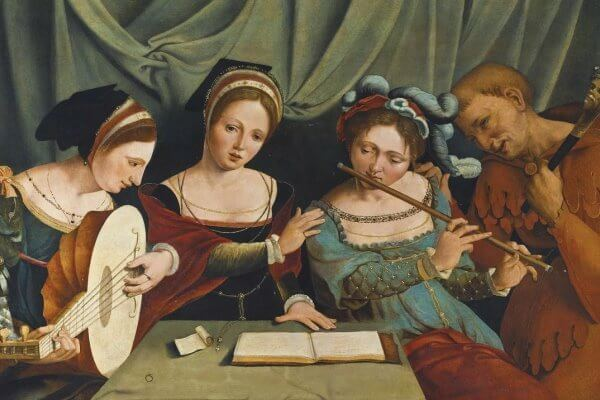
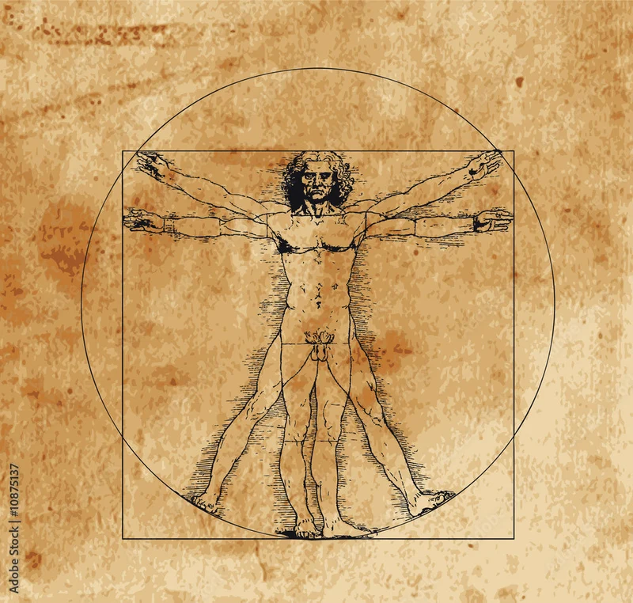

Contexto histórico
El Renacimiento fue un movimiento cultural y artístico de los siglos XV y XVI que marcó el inicio de la Edad Moderna en Europa.
- Sociedad de cambio (La Burguesía): los comerciantes y banqueros ricos de las ciudades ganaron un enorme poder económico. Utilizaron su dinero para convertirse en mecenas, financiando a los artistas para ganar prestigio, mientras la nobleza feudal perdía su antigua influencia.
- Monarquías y Capitalismo (Política y Economía): los reyes concentraron el poder creando las monarquías autoritarias (el origen del Estado moderno). A la vez, la economía agraria medieval dio paso a un capitalismo comercial basado en la banca, las monedas y el comercio marítimo con América.
- Crisis y Antropocentrismo (Religión): la mentalidad cambió hacia el antropocentrismo (el ser humano como centro de todo, usando la razón y la ciencia). Además, la Iglesia se fracturó con la Reforma Protestante de Martín Lutero, que dividió religiosamente a Europa.
- Revolución de la Información (La Imprenta): la invención de Gutenberg permitió la copia masiva de libros, abaratando la cultura. Fue la herramienta fundamental para que las ideas de los científicos, humanistas y reformadores religiosos se difundieran por todo el continente con rapidez.
En el Renacimiento, la música experimentará grandes cambios, principalmente dentro del terreno de la música vocal. El Renacimiento es la época de la polifonía, o composición a varias voces, que se impone definitivamente sobre la monodia medieval.
 |
 |
 |
¿Qué vamos a aprender?
2. Músicas renacentistas
2.1 - Música vocal religiosa
2.2 - Música vocal profana
2.3 - Música instrumental
2.4 - Instrumentos del Renacimiento